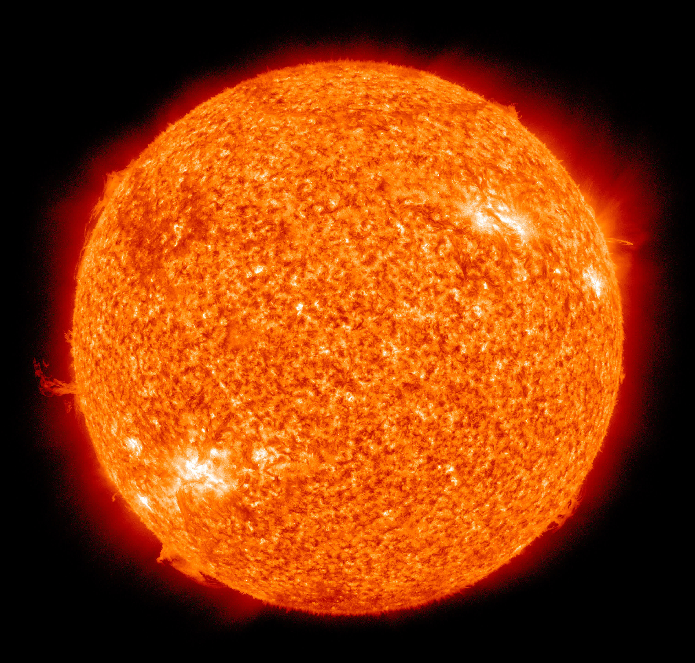
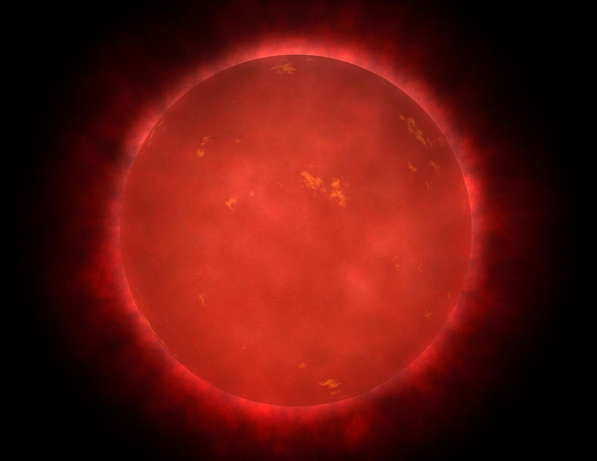
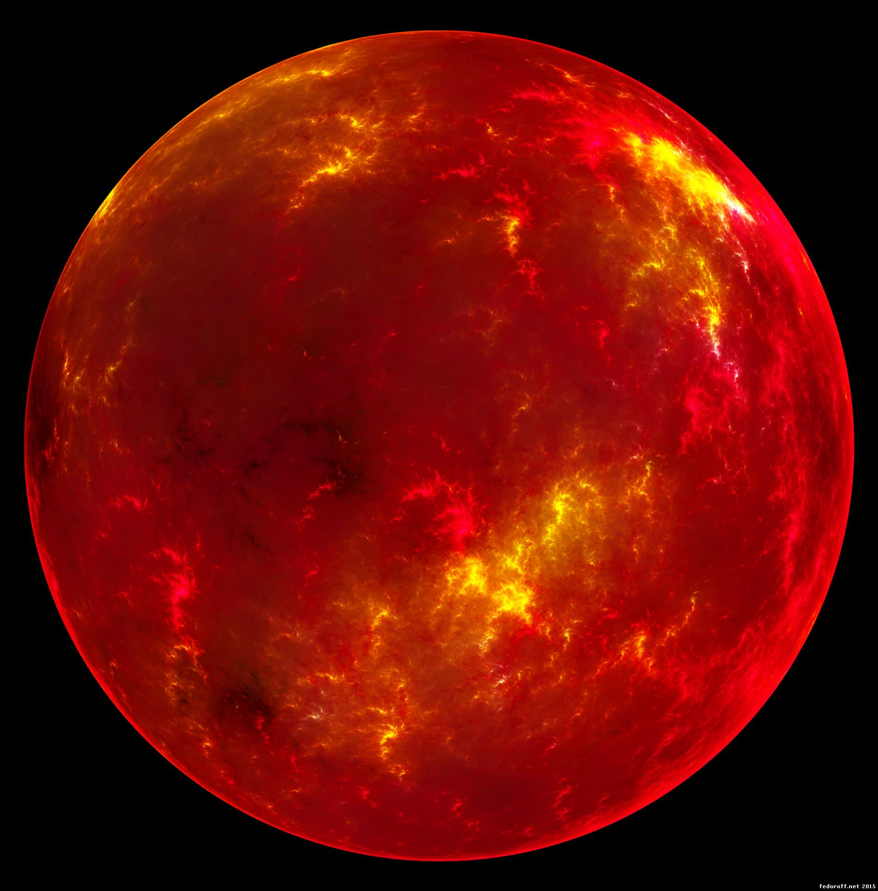
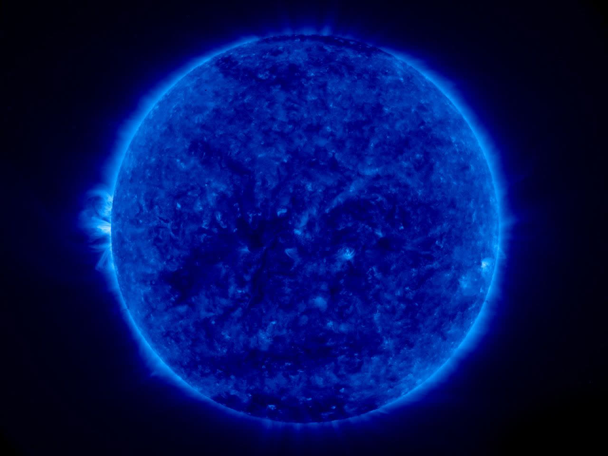
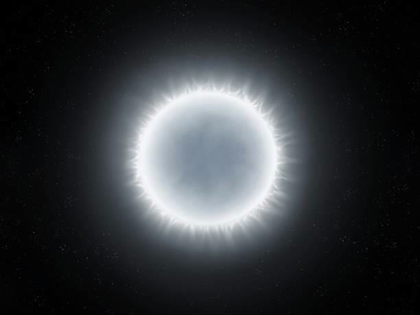

Звёзды
Звёзды — это гигантские светящиеся шары плазмы, в которых происходят термоядерные реакции. Они бывают разного размера, цвета, массы и возраста. Звёзды формируют галактики, создают химические элементы и определяют эволюцию Вселенной. Солнце — типичная звезда, но во Вселенной их триллионы, и каждая уникальна.
Типы звёзд

Жёлтый карлик
Пример — наше Солнце. Средние по размеру и температуре звёзды.

Красный карлик
Самые распространённые и долгоживущие звёзды во Вселенной.

Красный гигант
Стареющие звёзды, увеличившиеся в размерах и ставшие ярче.

Голубой гигант
Очень горячие и яркие звёзды, живущие недолго.

Белый карлик
Остатки звёзд, завершивших свою жизнь. Очень плотные и горячие.
Жёлтые карлики — средние по массе и температуре звёзды (пример: Солнце).
Красные карлики — самые распространённые, маломассивные и долгоживущие звёзды.
Красные гиганты — стареющие звёзды, увеличившиеся в размерах и ставшие ярче.
Голубые гиганты — очень массивные, горячие и яркие, но живут недолго.
Белые карлики — плотные остатки звёзд, завершивших свою жизнь.
Сверхновые — взрывы массивных звёзд, после которых могут образоваться нейтронные звёзды или чёрные дыры.
Красные карлики — самые распространённые, маломассивные и долгоживущие звёзды.
Красные гиганты — стареющие звёзды, увеличившиеся в размерах и ставшие ярче.
Голубые гиганты — очень массивные, горячие и яркие, но живут недолго.
Белые карлики — плотные остатки звёзд, завершивших свою жизнь.
Сверхновые — взрывы массивных звёзд, после которых могут образоваться нейтронные звёзды или чёрные дыры.
Строение звезды
- Ядро — область, где происходят термоядерные реакции и выделяется энергия.
- Зона излучения — энергия переносится наружу в виде излучения.
- Зона конвекции — энергия переносится потоками вещества.
- Фотосфера — видимая поверхность звезды.
- Хромосфера и корона — внешние слои атмосферы, видны во время затмений.
Жизненный цикл звезды
- Рождение в газопылевых облаках (туманностях).
- Главная последовательность — основная часть жизни звезды (термоядерный синтез водорода в гелий).
- Старение: превращение в красного гиганта или сверхгиганта, сброс внешних оболочек.
- Конец жизни: белый карлик, нейтронная звезда или чёрная дыра (в зависимости от массы).
Интересные факты о звёздах
- Самая большая известная звезда — UY Щита, её радиус в 1700 раз больше радиуса Солнца.
- Самая близкая к нам звезда — Солнце, на втором месте — Проксима Центавра.
- Звёзды могут существовать миллиарды лет, а самые массивные — всего несколько миллионов.
- Цвет звезды зависит от её температуры: голубые — самые горячие, красные — самые холодные.
- Взрыв сверхновой может за несколько секунд выделить больше энергии, чем Солнце за всю жизнь.
- В ядрах звёзд образуются все элементы тяжелее водорода и гелия.
- В нашей галактике Млечный Путь — около 100–400 миллиардов звёзд.